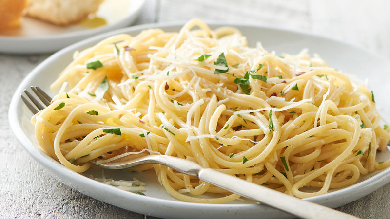

Spaghetti with Garlic and Olive Oil

Description
Ingredients:
- 1 lb (450 grams) spaghetti, or other long pasta
- 1/2 cup (120 ml) extra virgin olive oil
- 4-5 garlic cloves, finely sliced
- 1 tsp dried chili flakes, or to taste (or 3 fresh chillies)
- 1/4 cup fresh parsley, coarsely chopped
- 1/4 cup grated parmesan cheese, plus more to serve (optional, if you don't keep it vegan)
- salt, to taste
Instructions
- Bring a pot of salted water to the boil and add spaghetti.
Cook until al dente: the spaghetti is soft but still has a little bite.
- While the spaghetti is cooking make the sauce: If you don't use dried chili flakes,
remove the seeds from the chilies and finely chop. Peel and finely slice the garlic cloves.
- Heat the olive oil gently in a frying pan. Add the garlic and chili and cook gently for a few minutes, or until
the garlic is pale gold, which will be enough time for the flavorings to infuse the oil (take care not to burn it!).
Stir in chopped parsley
- Drain the spaghetti still "al dente", reserve 1/2 cup cooking water.
- Add spaghetti to the frying pan, stir well to coat with the oil, add some starchy cooking water,
as much as needed to ensure the pasta is moist and juicy*.
Cook on medium heat for 30 seconds, stirring a couple of times.
- Sprinkle the spaghetti with extra chopped parsley, and grated parmesan cheese if you don't keep it vegan. Enjoy!